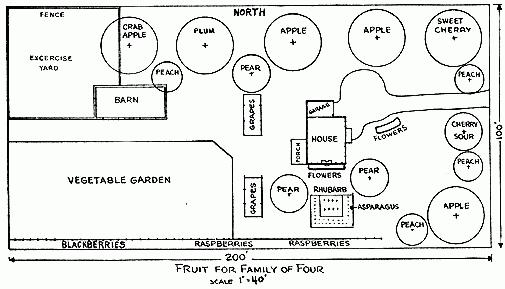
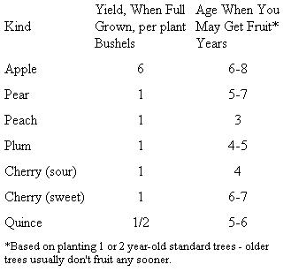
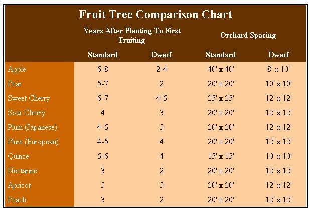

IF the Ed Robinsons of five years ago could have talked with the Ed Robinsons of today about home orchards, the Ed Robinsons of five years ago would have been saved a lot of trouble. Now perhaps we can save you that trouble!
Soon after we first moved to our place we became excited about dwarf fruit trees - pigmy trees that produce delicious, normal size fruit in only 2 or 3 years. But when we went to order some our local nurseryman didn't have the right kind of dwarfs and he advised us to buy standard trees instead.
"But we haven 't enough space in our back lot for many big trees," we protested.
"Then why dont you plant your orchard in front of the house?" he suggested.
"Well, we planned to landscape the front with pretty trees."
"Haven't you ever seen an apple tree in blossom?" he asked. Of course we had - so we planted our 18 fruit trees around the house and front lawn. We landscaped with fruit trees instead of shade trees. (Later we discovered that the back of our acre was too swampy for fruit trees anyway. If the roots of young trees stand in water they don't do well.) So we've never regretted our decision to plant fruit trees in front of the house.
We feel that the very first thing people should do when they buy a piece of land - even before the house is built, when possible - is plant a small orchard. The sooner planted, the sooner you will get fruit. The length of time you have to wait before your fruit trees bear seems to discourage a lot of people. But even if you should move before your fruit trees do bear, they'll increase the value of your place many times beyond their cost.
As for the care of fruit trees, our nurseryman gave us a lecture before he would take our order. He said, "Now remember, you can't simply plant fruit trees and forget about them. You have to spray them - just as you do garden plants - and prune them once a year in addition." It wasn't until after we assured him we would do this, that he would take our order.
More likely than not your own local nurseryman will take a real interest in your fruit growing project. It is a good idea to buy from him rather than a far away nursery selling by mail because not only will you get some good advice from your local nurseryman from time to time, but he knows which varieties do best in your particular locality. Many local nurserymen today buy their young stock from famous nurseries all over the country, so if you want something special he'll get it for you.
We had a lot of fun considering what and how many trees to plant. Before we decided which variety of apples, we visited a commercial apple orchard, bought four or five varieties, tasted them and cooked them.
We learned that commercial growers give the appearance of an apple - or any fruit - undue importance. With them looks seem to rate as high as taste. Probably because appearance sells the apple at the fruit stand. Obviously, the first thing we were interested in was taste . . next came keeping qualities .. looks was last on our list.
In selecting the varieties we kept in mind the fact that certain apples ripen in July, others in August, September and October. By planting five apple trees, we would have apples summer and fall - and also a late apple which would keep over the winter.
After considerable reading and a lot of talks with our local nurseryman, the following is a list of the standard fruit trees we believe sufficient to furnish a large family with enough produce for eating, canning and storage: 3 apple; 4 peach; 3 pear; 2 sour cherry; 1 sweet cherry; 2 plum. In Southern latitudes you can have citrus, apricot, nectarines, fig. Be sure not to plant your young trees too close to the house or to other trees. (See chart.)
The following table will give you an idea about yields and age of bearing:
Even though all the fruit catalogues tell you that you can plant in either spring or fall, spring is preferred in most sections. Planting should be done as early as the ground can be worked and before growth has started in the plants. Don't use fertilizer when planting. Use fine earth and tramp earth solidly about the roots with your feet, shovel by shovel. Set trees about an inch deeper than they were in the nursery.
Keep a three foot circle cultivated around the tree trunk. In the fall mulch them with poultry house litter. From the second year on, cultivate regularly and fertilize at end of June by using a barnyard manure mulch. This serves to keep in moisture during hot dry spells in July and August and provides additional food. You will be surprised at how much faster this will bring your trees to bearing.
Some state agriculture departments will send you postcards throughout the year telling you with what and when to spray your fruit trees. Needless to say, this is an invaluable service and you should get your name on your state's list of fruit growers so you can more easily take care of spraying. Ask your County Agricultural Agent about this service.
Now, after many years of experimental work really good dwarf fruit trees are available. The two exciting things about dwarf fruit trees is that they take very little space and they bear fruit a year or two after you plant them whereas with standard trees you have to wait four to eight years!
Take a look at the comparison chart on the next page. It will help you decide which type of trees to plant.
Dwarf trees have many advantages, and a few disadvantages, when a detailed comparison is made with standard trees. Let's look at the advantages:
Dwarf trees take less space. In the space required by 4 standard apple trees, 80 x 80 feet, you can plant as many as 64 dwarf apple trees! Even the ordinary suburban "house and lot" has space for a few dwarfs.
Dwarf trees are easier to spray or dust. All fruit trees must be sprayed or dusted. Dwarf trees, particularly the "little" dwarf or "semi-dwarf" can be sprayed or dusted with an efficient garden sprayer or duster. This is most desirable because the expensive, bulky spraying equipment for standard trees is not needed. Spraying is much easier, and consequently it gets done.
Dwarf trees bear fruit sooner. A "standard" apple tree usually does not produce fruit for 5-10 years after it has been planted. A dwarf tree will often bear fruit in two years!
Dwarf trees are easier to prune. Obviously a tree 5 to 10 feet tall is much easier to prune than a tree 25 to 30 feet tall.
Dwarf trees grow large fruit. Fruit buds, like turnips for instance, need to be thinned if the biggest fruit is to be grown. Dwarf trees, where the tiny fruit can be thinned easily, often produce bigger fruit.
Dwarf trees make possible more variety. Naturally if you can plant 10 to 15 dwarfs in the space required by a single standard tree, you can have 10 or more various kinds or varieties of fruit, instead of one. This has another advantage: you can have early, mid-season and late fruit by selecting varieties that ripen at different times.
Dwarf trees are easier to harvest. Fruit from the smaller dwarfs may be picked from the ground without the bother and danger of climbing a ladder.
Dwarf trees mean, less damaged fruit. Fruit dropping from the small dwarfs, particularly when the ground under the trees is mulched with straw, hay or sawdust, is often undamaged.
Dwarf trees produce top-quality fruit. Fruit produced on a dwarf tree not only tastes as good as fruit from a standard tree, but because it is easier to give dwarfs better care, the fruit often surpasses that from large, and particularly old commercial trees.
As for the disadvantages, here are several you should know about:
Dwarf trees are more expensive. Of course prices vary in different localities, but a New York State nurseryman lists 2 year dwarfs at $3.50 and his standard trees at $1.75. When the supply catches up with the demand, this difference won't be as great.
Dwarf trees are shorter lived. However, this is not too serious a drawback. A dwarf apple tree will bear for 25 to 30 years compared to say 40 years for a standard tree.
The fruit you get from dwarf trees is full-sized. All standard varieties of fruit are available on dwarf trees; that is you can buy dwarf McIntosh, Baldwin, Northern Spy apples . . Bartlett, Clapp's Favorite, Duchess, Seckel pears . . . Elberta, Hale-Haven peaches, and so on.
The fact that dwarf trees are easier to care for doesn't mean you can grow them without knowing a few of their peculiarities, however. Certain things about dwarf management are different. They must be planted correctly or they may grow into large trees. Pruning and thinning, though more simplified, is different. You'll find it really fascinating to read up on dwarf trees - also this will insure you against buying the older kind of dwarfs which nurseries used to carry and which weren't always reliable. We recommend you seriously consider planting dwarf apple, pear and possibly sweet cherry trees as these three have been developed the most successfully. Dwarf fruit trees, one of the biggest horticultural advances in years, mean a lot for the small place.
Dear Ed & Carolyn: One day Carolyn and I received this letter:
"Here in Georgia a great many pecans are raised commercially and many farmers have a side line grove of the nuts which add considerably to their income. The trees make beautiful ornaments as shade trees besides the crop they bear. One suburban home I know of has two trees that brought in a total of $84 cash this year. Another single tree I know of bore over $50 worth of nuts."
Sgt. Herbert P. Keene
This was only one of the letters friends have written us to say that we should include mention of nut trees in our "Have-More" Plan. They pointed out that nut trees are unbelievably easy-to-grow, make beautiful shade trees, require less spraying and pruning than fruit trees, and supply the table with a nutritious, easy-to-keep food.
Well, I will say truthfully that about all that I know about nut trees is what I've read about them. We do have on our place one big, old butternut tree that has born huge crops; the nuts have a heavy husk and thick shell, but are mild and good-tasting after you get them cracked.
But Carroll D. Bush, in the Nut Grower's Handbook points out that here in America in the past thirty years, more has been accomplished with nut trees than millions of people in the old world accomplished in centuries. Better varieties of both European-Asiatic, and American nuts have been selected and bred for improvement and hardiness.
Today there are nut trees suitable for growing in every state. Of course, nearly everyone is familiar with the great almond and English walnut groves on the Pacific Coast and the pecans in the south. But do you realize the many varieties that have proven successful in the north and eastern states? Here are some of them: Imgreat almond and English walnut pecan, hickory, hican (a cross between a hickory and pecan), filbert, almond, Chinese and Japanese chestnuts, heartnut, and many varieties of hazel nuts.
Although nut growing is by no stretch of the imagination a "get rich quick idea," it does have a definite commercial side. For the homesteader, nut trees do have a good deal to offer.
Suggested Reading:
Dwarf Fruit Trees-$1.00.
|
 Here is one plan for less than a half-acre homestead showing how you can attractively landscape your grounds with fruit trees. Note that tall trees are generally planted on North boundary. In this plan trees are planted as close as is practical and size (spread) at maturity indicated - scale 1"" equals 40'. |
 |
 |